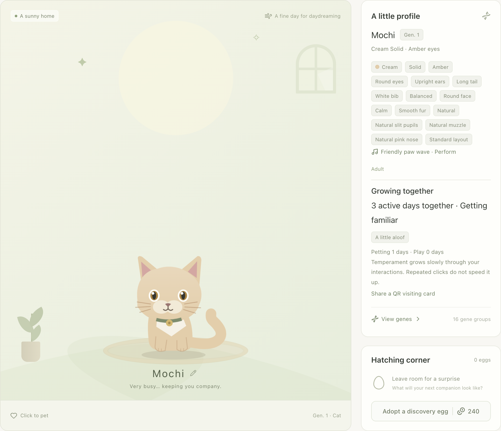
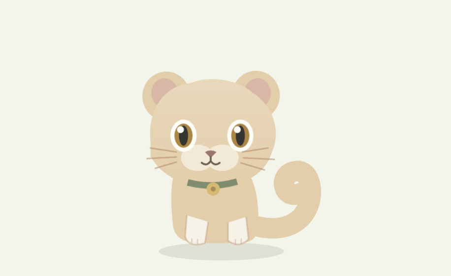
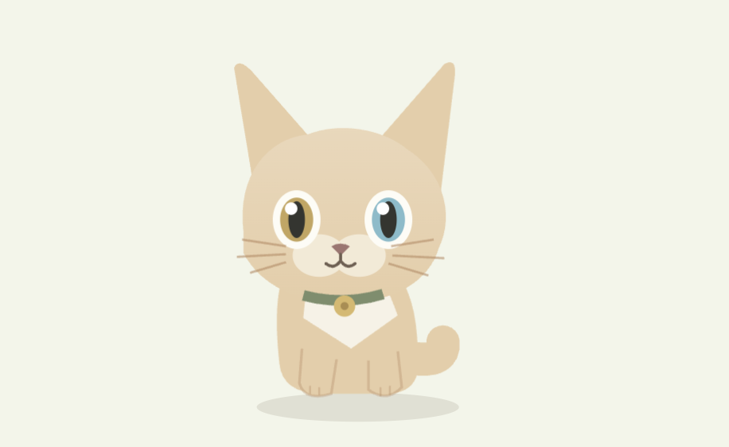

需要你时，留一个提醒
本地请求等待审批或回答时，保留黄色铃铛。点一下，回到需要处理的会话。
遇见一只随 Codex 工作慢慢成长的猫咪。用量留在手边，需要你处理时轻轻提醒，双击猫咪就回到对应会话，右键打开菜单。
安静待在桌面，让你回来就知道接着做什么。
本地请求等待审批或回答时，保留黄色铃铛。点一下，回到需要处理的会话。
双击猫咪返回需要处理的会话，或从右键菜单打开最近会话列表，按真实标题选择。
给会话留一句工作书签。返回时，猫咪旁边显示你的备注，方便接着处理。
散散步、玩个球、看看光标。低频招呼会避开夜间和工作，也尊重你的勿扰选择。
本地 token 用量可以获得有上限的宠物币奖励。孵化猫咪、发现遗传特征，培养它的小才艺。
玩一轮短小游戏，积累熟练度和亲密度，解锁玩具、纪念物和房间装饰。
回复结束了、问题等你回答、权限请求还没处理。爪印给不同状态留一个清楚的信号，让你知道该回哪里。
审批 Hook 的自动设置目前支持 macOS；本地提问提醒识别受支持的结构化记录。
领养一枚蛋，遇见你的猫咪，慢慢熟悉它的性格。眨眨眼、玩一会儿、长大一点，再在你的工作日里找个喜欢的位置。

毛色、眼睛、耳朵和尾巴由遗传基因决定。图鉴列出获取概率，慢慢找到你喜欢的组合。


把 token、按模型估算的费用，以及近期额度快照留在手边。想仔细看看时，还有每日和各模型的明细。
费用是 API 等价估算，不是订阅账单。额度来自本地快照，不是实时账号查询。
把 API 连接、会话管理、皮肤与用量放在一起。macOS 上保留已识别的 ChatGPT 登录，为新本地会话选择默认 API 连接；密钥留在钥匙串，修改配置前自动备份。
Provider 管理与皮肤目前仅支持 macOS。路由、皮肤恢复和自动重试需保持 Pawprint 运行。原生能力使用官方账号连接，可用性取决于账号与客户端；远端会话仍由客户端管理，参考费用不等于账单。
在 Codex 助手 → 皮肤中点选预览。首次使用显示视频下载进度，校验后保留缓存，之后离线可用，无需安装 QQ 音乐。目前支持 macOS。
城市夜景里的安静陪伴，新会话带一次开场动画。
坐在软垫上，安静陪你工作的猫咪。
明亮小屋里，活泼的小狗陪在身边。
分享二维码访问卡，或在同一局域网连接附近的小屋，邀请串门和繁育。双方选择连接，聊天正文和用量仍各自留在本机。
新领取的初遇蛋固定为奶油虎斑外观，后续探索与繁育仍有不同组合。已有伙伴、蛋和偏好继续保留；新安装默认英文。
Windows 内测包未签名，Mac 使用临时封装签名。请核对发布页的 SHA-256 文件。Mac 上先将 Pawprint 放到 Applications；如果系统无法验证开发者，点“完成”，再到“系统设置 → 隐私与安全性”选择“仍要打开”。若提示“已损坏”，请停止并反馈该版本。
Mac 签名与安装指南 ↗宠物、工作入口、提醒、书签和小游戏都在本地运行，不额外发起模型请求。正常使用 Codex 的用量仍按你的套餐规则执行。
支持 Windows 10/11 x64 和 Apple 芯片 Mac。返回会话需要兼容的 Codex 桌面客户端；第三方 Provider 管理和原生 Hook 设置目前仅支持 macOS，本地用量及受支持的提问记录也可在 Windows 使用。
新安装默认启用安静的本地提醒，并在发现 Codex 数据时准备 Pawprint 的 Hook。提问状态更新需要在客户端审核并信任带 Pawprint 名称的规则；人工审批标记由兼容的桌面客户端待处理请求驱动。是否添加声音或系统通知，由你选择。
宠物、书签、房间和用量保存在本地存档。API Key 保存在 macOS 钥匙串。价格目录和更新检查会联网；第三方模型请求由你配置的服务处理。附近串门是可选功能，使用你的局域网。